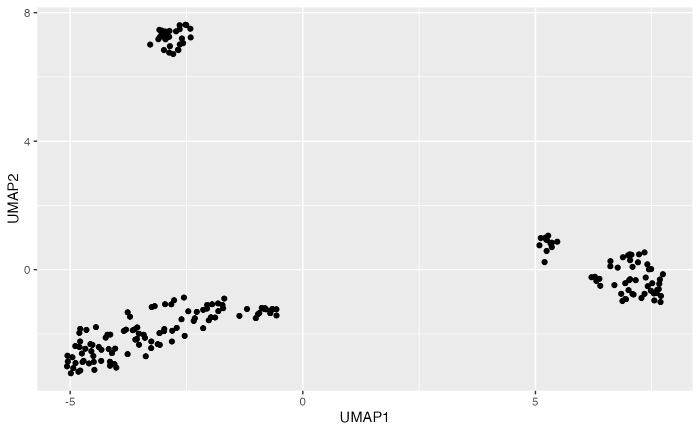

R/plotUMAP.R
plotUMAP.RdPlot UMAP results either on already run results or run first and then plot.
plotUMAP( inSCE, colorBy = "No Color", shape = "No Shape", reducedDimName = "UMAP", runUMAP = FALSE, useAssay = "logcounts" )
| inSCE | Input SingleCellExperiment object with saved dimension reduction components. Required |
|---|---|
| colorBy | color by a condition(any column of the annotation data). |
| shape | add shapes to each condition. |
| reducedDimName | saved dimension reduction name in the SingleCellExperiment object. Required. |
| runUMAP | If the dimension reduction components are already available set this to FALSE, otherwise set to TRUE. Default is False. |
| useAssay | Indicate which assay to use. The default is "logcounts" |
a UMAP plot of the reduced dimensions.
data(scExample, package = "singleCellTK") sce <- subsetSCECols(sce, colData = "type != 'EmptyDroplet'") sce <- getUMAP(inSCE = sce, useAssay = "counts", reducedDimName = "UMAP")#>#>#>#>#>#>plotUMAP(sce, shape = "No Shape", reducedDimName = "UMAP", runUMAP = TRUE, useAssay = "counts")